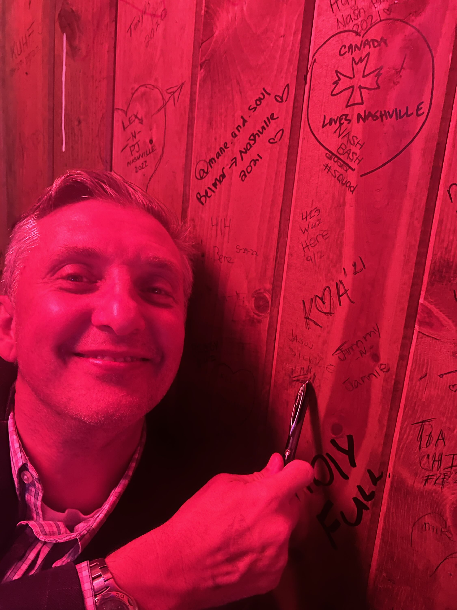

Jason Sickle
Jason Sickle is the fearless leader of the ubiquitous Integrated Applications Team at NFP Corp. He is married to Mindy and they have two sons, Preston and Spencer, and a daughter Jordan. Jason is a New York City native. He and Mindy are regular patrons of Vanguard Wine Bar in their neighborhood – if you see them while you are out and about, they would love it if you stopped by to say hello.
Photos

Trivia
- In lieu of a Star on the Hollywood Walk of Fame, Jason autographed the wall during his appearance at WannaB’s Karaoke Bar in Nashville, TN during the 2022 P&C Application Support Summit.
- Breaking the Salesforce to Epic Integration is his best known accomplishment at NFP – better known as the day Salesforce broke Epic.
- He is a staunch advocate of MadCap, however his access has been denied.
Quotes
- “And that’s why NFP invites you back every day.”
- “Don’t worry about it. Always say yes. We have plenty of resources, and budget is no problem.”
- “If it was said in a meeting, it must be true.”
- “That’s why they pay you the big bucks.”
Trademarks
- Hoodrat’s Merch – Jason is credited with naming Carter Black’s t-shirt business.
- Ref materials and photos provided by Ashley Westmoreland.
Salaries
Will work for 5 Star user surveys.